Product quantization Tree
PQ之后自然要看一下PQ Tree的: Efficient Large-scale Approximate Nearest Neighbor Search on the GPU
感人的是开源了:code
Abstract
对于高维ANN搜索收到了PQ的启发提出了新的方法，提出了两层的乘积量化树，在树遍历过程中减少了向量的比较次数。提出了并行re-ranking方法并且利用已经计算好的距离值提高了效率。比当时流行的几种方法的性能都要好，该文章也是在ANN搜索问题中第一个使用GPU进行优化的。
Background
显然，是要把 KD-trees、LSH、Vector Quantization、 Product Quantization、倒排文件系统、介绍一遍…
介绍乘积量化的时候作者用了一幅图来引出文章中乘积量化树的概念，对PQ的理解很有帮助，恍然大悟…
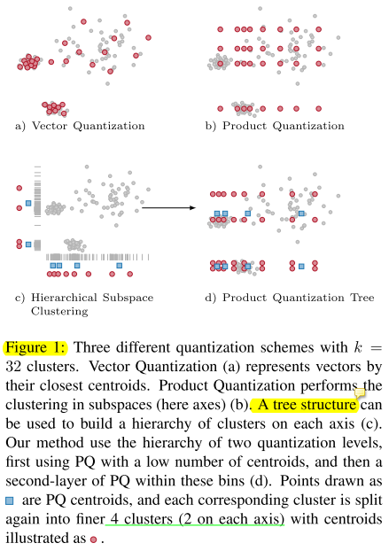
Inverted multi-index (IMI)
对于查询向量，每个部分都可以聚类到k个质心，各个部分再笛卡尔积即为候选Bins再以它们的最近距离的组合为起点，即Bi, i = (i10, i20, … , iP0)，进行启发式地遍历其邻近的点。倒排多索引的例子如下，查询向量被分为uv两部分，先计算每个部分与质心的距离按升序排列，然后组合这两部分按照迪杰斯特拉算法选出候选集。
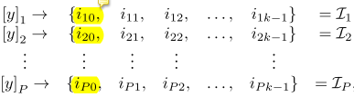
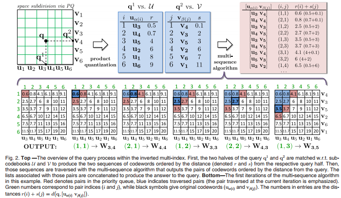
Product Quantization Tree
1.Tree structure - offline phase
库中数据集x映射到桶中（p部分码字的笛卡尔积），索引结构的第一层是乘积量化到的k1个质心，第二层是向量量化为的k2个质心（能够聚类到第一层质心），先PQ后VQ构造树结构。跟倒排多索引一样，先是两层的乘积量化，然后是re-ranking
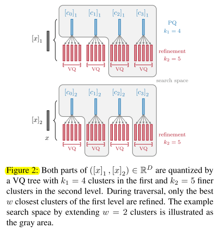
2.Query - online phase
A query now consist of four steps: tree traversal, bin proposal, vector proposal, and re-ranking.
tree traversal
先比较第一层质心选出最近的w个，再计算第二层，最终在两层相近质心的笛卡尔积中选出最优的bin
Bin Proposal Heuristic
选出桶后就需要在桶中选择最优的向量re-ranking，采用优先队列的方法 Dijkstra-ordering由于连续性无法做GPU优化。
文章采用一种各向异性扩散的方法（红色），可以采用不同的斜率使得每个部分用来组合的码字数量不同，斜率为1时两部分同等考虑，从而生成的遍历序列更接近于采用Dijkstra（绿色）的办法。 蓝色有很大误差。
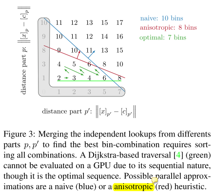
3.Re-ranking by line quantization
Offline computation 在索引结构中，每个向量量化后，为了找到桶中距离查询向量最近的向量还需要基于所有距离排序，乘积量化中还需要将残差向量跟码本比较，这些计算量都很大。文章提出了线量化，分为离线计算和在线查询两部分。文章中的图示都十分清楚！
对于数据集中的向量先进行线量化，就是将向量投影到最近的两第一层质心连线上。我们可以用下面的公式通过已知的两质心和lambda 表示向量共1+1=2bytes，此时向量到两质心的距离已经求出，库中所有向量采用三元组来编码。共p部分，每部分k1 × k1个距离值，查找表大小 p×k1×k1
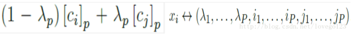
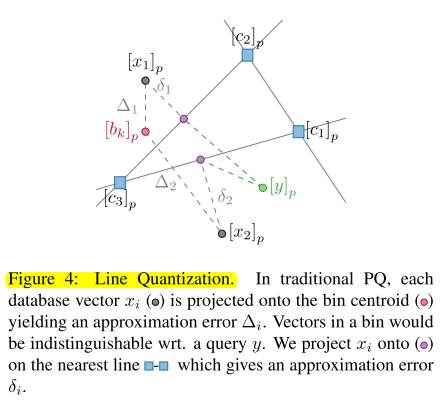
Online computation
在tree traversal那一步，查询向量与第一层质心的距离已经算出存在链表(index,dis)中，在计算x、y距离时，我们近似为y与x的线量化（紫色点）的距离，如下图，ap,bp,λp,cp都已知啊哈哈，于是乎，根据三角形余弦公式采用如下公式即可算出距离了，一眼望去全都是已知量，爽！
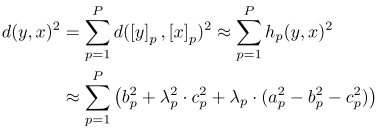
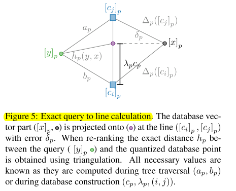
GPU Implementation
文章采用GPU并行CUDA编程进行了优化，主要有两种粒度的并行，第一种是多向量并行每个向量占用一个块，第二种是向量元素并行占用一个块内的所有线程。
主要有三个内核函数：
- 计算向量与第一层质心的距离，并用 bitonic sort 在共享内存中排序；
- 基于上一步的结果计算向量与第二层质心的距离并排序；
- 计算向量的最佳线投影，再用线量化与之前的结果进行re-ranking。
实验结果
On the GPU, sorting the SIFT1M vectors into the bins takes 1051ms, performing the line quantization for these 1M vectors about 458ms (p = 4, k1 = 16, k2 = 8, w = 8).
In our implementation the
maximum number of sortable vectors on the GPU per query is currently limited to 4096 during re-ranking.
Query times and Recall
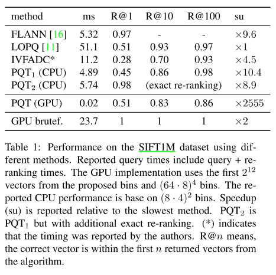
Precision of Line Quantization
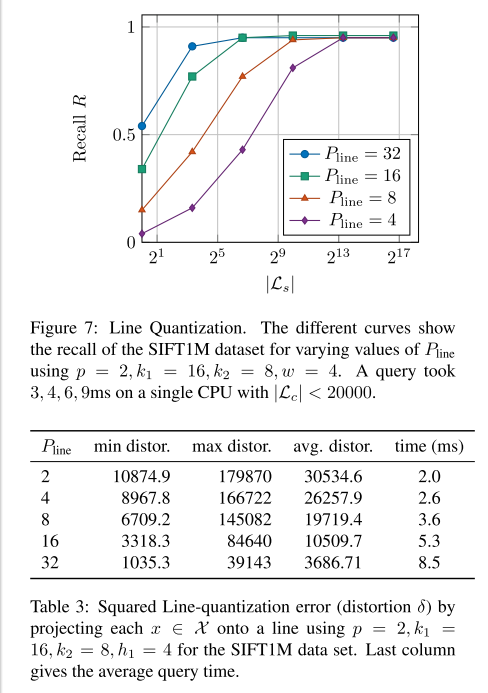
参考文献
http://blog.csdn.net/lovego123/article/details/74910193
http://ieeexplore.ieee.org/stamp/stamp.jsp?tp=&arnumber=6915715